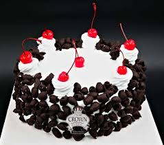
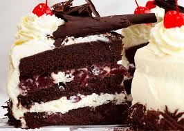
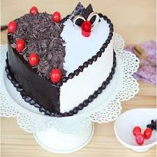
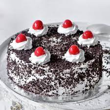

BLACK FOREST

INGREDIENTS
- CAKE
- eggs
- sugar
- all-purpose flour
- unsweetened cocoa powder
- unsalted butter
- vanilla extract.
- FILLING
- bing cherries, pitted, plus 12 whole cherries for decor.
- kirsch
- cold water
- FROSTING
- heavy whipping cream
- Confectioners sugar
- kirsch
- dark chocolate
Calori chart
| NUTRIENTS |
QUANTITY |
| Carbs |
46 |
| Dietary Fiber |
5 |
| Sugar |
8 |
| Fat |
4 |
| Saturated |
1 |
| Polyunsaturated |
0 |
| Protein |
18 |
| Sodium |
0.8 |
| Potassium |
0 |
| Cholesterol |
0.25 |
| Vitamin A |
8 % |
| Vitamin C |
20% |
| Calcium |
30% |
| Iron |
15% |



FUN FACTS
- The Black Forest cake originated from Germany where it was initially called Schwarzwälder Kirschtorte, which means Black Forest Cherry Torte or Gateau in the German language.
- The world’s largest Black Forest cake was made by K&D Bakery on 16th July 2006 that weighed about 3000 kgs
- The cake originally became famous in Germany and in no time it became the talk of the town in entire Europe. Presently, it is the most wanted flavor of cake all over the world.